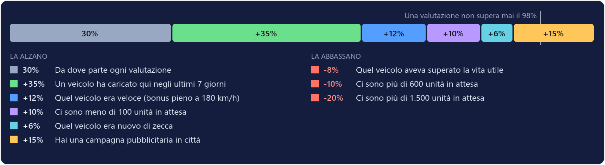

Valutazione delle stazioni
Quanto del carico vicino ottieni davvero.
Ogni carico in una stazione ha una valutazione: la quota della produzione vicina che arriva alla tua banchina. Una miniera che produce 150 al mese dà a una stazione con il 70% circa 105.


- La valutazione si avvicina un po' a questo totale ogni pochi giorni. La finestra della stazione la mostra.
- Un veicolo che ha caricato più tempo fa conta meno: +25% entro 15 giorni, +12% entro 30 giorni, niente dopo.
Spartirsi il carico con i rivali
Quando più stazioni coprono la stessa industria o le stesse case, le due con la valutazione migliore si spartiscono il carico. Un rivale con un servizio migliore si prende il tuo.
La finestra di un'industria elenca le stazioni nel raggio con la loro valutazione e la loro quota, e una barra mostra come la produzione si divide tra le compagnie e quanta resta indietro.